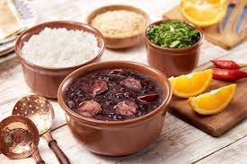
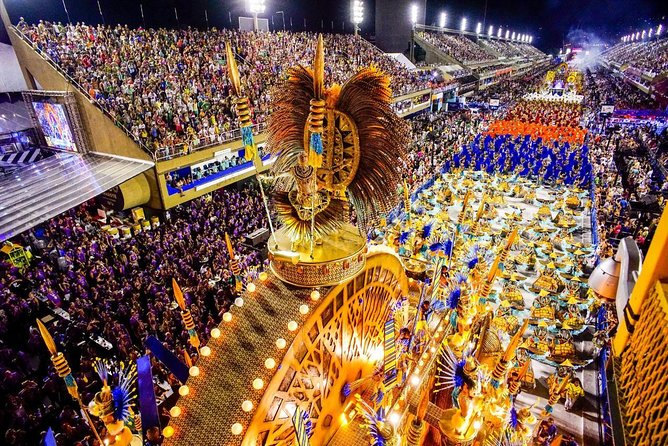
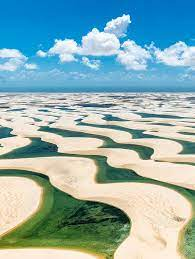
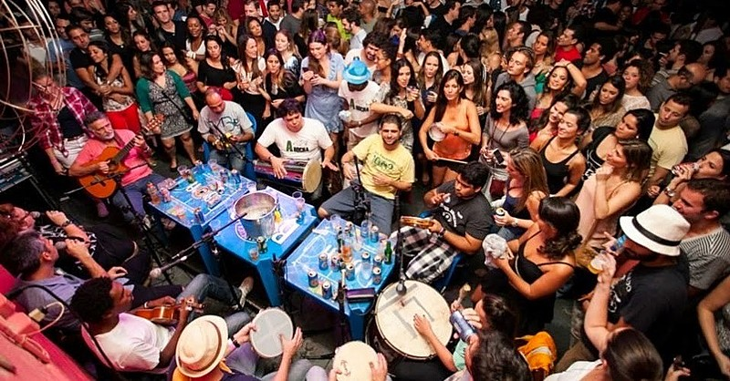

1. It has GREAT food. Just look at this feijoada!!
Feijoada is a national brazillian dish made with black beans, pork, some sausages and a variety of meat.

2. It has GREAT parties. Just look at the Rio Carnival!!
The Rio Carnival is one of the greatest parties in the world.

3. It has GREAT places and landscapes. Just look at Lençóis Maranhenses!!
Lençóis Maranhenses was considered one of the most beautiful and different places in the world.

4. It has GREAT music. Just look at this Roda de Samba!!
"Roda de samba" is a name for a meeting of musicians who gather to play samba with their guitars, tambourines, cavaquinhos, and people who want to dance.

5. Last but not least - It has GREAT memes. Se quiser sim, mano!!
This one below is Ramon Dino, a famous brazillian bodybuilder, vice-champion of Mr. Olympia 2024.